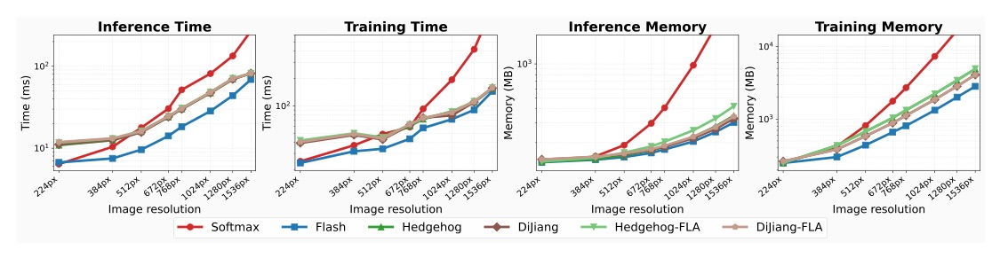
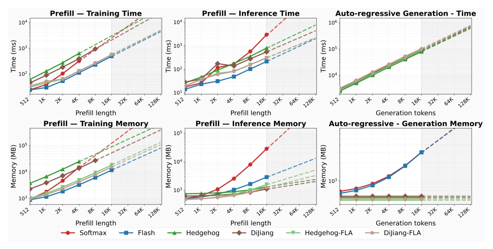
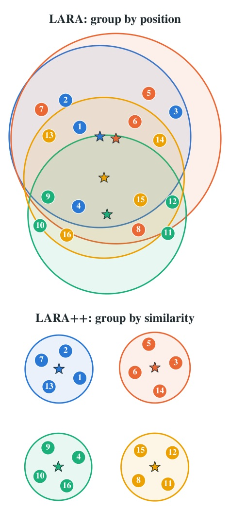
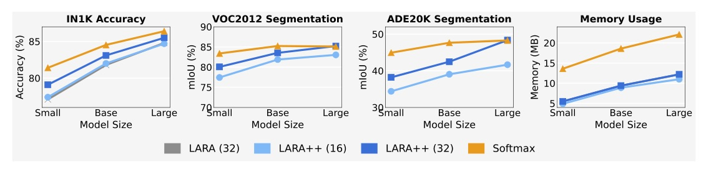
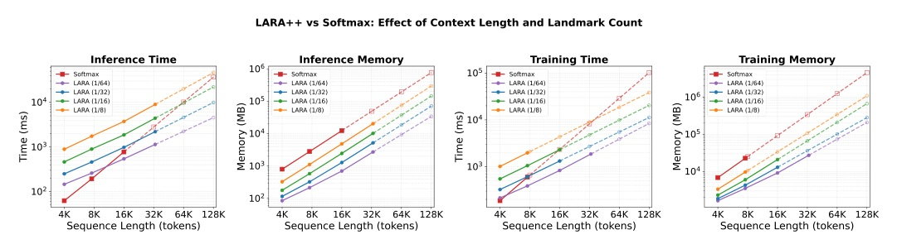

論文：The Kernel Reality Check: Benchmarking and Distilling Efficient Attention at Scale · arXiv 2611.22947 · 程式碼 github.com/firatoncel/KernelRealityCheckNeurIPS2026
選題說明：今日 arXiv 清單中唯一乾淨命中「attention / kernel」的頂會 accepted 論文。上週四（11-12）就想做這篇，但當時還沒有 PDF；今天 arXiv 版已釋出 · Reviewer 資料：未取得
Kernelized attention 的 O(N) 優勢在 A100 上大多沒兌現：FlashAttention-2 在訓練與 ViT 推論的時間、記憶體全勝；linear attention 唯一明確的贏面是 causal LM 推論的記憶體。品質上 SOTA 方法掉 2–10 點，作者的 LARA++ 收到 1.3 點內（最高 99%），但 clustering 開銷讓效率牆依舊在。
max_memory_allocated| 設定 | FlashAttention | 最佳 kernelized |
|---|---|---|
| ViT-S 1536px 訓練 | 144.9 ms / 2,830 MB | 157.0 ms / 4,085 MB（DiJiang） |
| GPT2-S N=16K | 488.6 ms / 11,767 MB | 565.8 ms / 15,423 MB（DiJiang-FLA） |
| GPT2-S train @4K | 111.6 ms / 3,264 MB | 130.6 / 4,930（Hh-FLA）· 131.0 / 4,201（DJ-FLA） |
| GPT2-L train @4K | 716.6 ms / 16,850 MB | 808.9 / 25,179（Hh-FLA）· 838.7 / 21,630（DJ-FLA） |


| GPT2 | Flash | Hedgehog-FLA | DiJiang-FLA |
|---|---|---|---|
| S prefill @16K | 215.2 / 2,886 | 304.0 / 1,583 | 304.8 / 1,256 |
| L prefill @16K | 1,413.9 / 13,180 | 1,719.8 / 4,984 | 1,761.0 / 4,621 |
| S gen 16K | 90,041 / 2,991 | 90,952 / 481 | 103,023 / 507 |
| L gen 16K | 221,969 / 15,576 | 199,232 / 3,144 | 234,094 / 3,368 |
作者提醒：Flash 在 16K 生成仍 <3 GB（A100、單一輸入），這個優勢在部署資源吃緊或超長生成時才關鍵。
DiJiang：「生成吞吐恆定」
Hedgehog：「32K 時比 FA 快近 5×」
作者坦承：剩下的 gap 要歸因於機制本身還是實作，需要 roofline 分析才能定論。
| 方法 | DeiT-S/224 | DeiT-B/224 | DeiT-B/384 |
|---|---|---|---|
| Softmax | 79.8 | 81.8 | 82.9 |
| Hedgehog | 77.7（−2.1） | 79.7（−2.1） | 80.4（−2.5） |
| DiJiang | 71.9（−7.9） | 74.5（−7.3） | 72.8（−10.1） |
| LARA | 77.4（−2.4） | 80.0（−1.8） | 81.0（−1.9） |
| LARA++ | 78.5（−1.3） | 80.8（−1.0） | 82.1（−0.8） |
為何選 LARA 當起點：三個方法中最有原理（Hedgehog、DiJiang 是對 feature map 的 ad-hoc 修改）。

公平性：Section 6 的 baseline 都在同一框架蒸餾；有官方配方的保留其客製化，learning rate 各自調到最穩定。

| 方法 | DeiT-S/224 acc / mem | DeiT-B/384 acc / mem | DeiT-S train ms/step |
|---|---|---|---|
| Softmax | 79.8 / 1.00 | 82.9 / 1.00 | — |
| Hedgehog | 77.7 / 0.41 | 80.4 / 0.52 | 294.6 |
| DiJiang | 71.9 / 0.31 | 72.8 / 0.48 | 274.8 |
| LARA | 77.4 / 0.35 | 81.0 / 0.58 | 289.6 |
| LARA++ | 78.5 / 0.35 | 82.1 / 0.58 | 352.1 |

| 變體（DeiT-S） | # landmarks | Top-1 (%) |
|---|---|---|
| Softmax | — | 79.8 |
| LARA（連續 chunk） | 28 | 77.4 |
| LARA（隨機選 landmark） | 28 | 76.4 |
| LARA++（取樣 feature） | 28 | 78.2 |
| LARA++ | 28 | 78.5 |
| LARA++ | 20 | 78.0 |
| LARA++ | 14 | 77.5 |
前三點為編者推論，第四點為作者結論（§8）。
The clear wins for linear attention are confined to inference in CLMs: memory during prefill and auto-regressive generation.
Linear attention 明確的優勢只限於 causal LM 推論：prefill 與自回歸生成的記憶體。§1, p.2
Comparing against a vanilla Transformer without KV cache is therefore misleading.
因此拿不帶 KV cache 的 vanilla Transformer 來比較是誤導。§4 Finding 4, p.6
Its cost is therefore bound by memory traffic and kernel launches, not by arithmetic.
因此它的成本受記憶體流量與 kernel launch 限制，而非算術。App. C, p.15
The central challenge for efficient attention is no longer obtaining linear asymptotic complexity, but designing computations that map efficiently onto modern hardware while preserving softmax quality.
高效 attention 的核心挑戰不再是取得線性漸近複雜度，而是設計能有效對應到現代硬體的計算，同時保住 softmax 品質。§8, p.10
| Softmax | Flash | Hedgehog | DiJiang | Hedgehog-FLA | DiJiang-FLA | |
|---|---|---|---|---|---|---|
| ViT-S inf | 269.7 / 4294 | 69.0 / 302 | 82.5 / 347 | 82.0 / 327 | 82.2 / 421 | 82.4 / 342 |
| ViT-B inf | 499.5 / 8740 | 115.2 / 754 | 128.7 / 841 | 131.7 / 816 | 131.3 / 983 | 133.2 / 846 |
| ViT-L inf | 1351.5 / 12398 | 363.7 / 1748 | 390.0 / 1826 | 402.9 / 1887 | 396.5 / 2015 | 407.0 / 1926 |
| ViT-S train | 1205.7 / 33341 | 144.9 / 2830 | 156.6 / 4935 | 157.0 / 4085 | 158.5 / 4960 | 158.4 / 4085 |
| ViT-B train | 2445.3 / 66843 | 357.4 / 5844 | 366.4 / 9996 | 381.0 / 8323 | 369.7 / 9972 | 382.6 / 8323 |
| ViT-L train | OOM | 1134.0 / 15261 | 1143.7 / 26162 | 1194.6 / 21727 | 1150.4 / 26162 | 1199.0 / 21727 |
Flash 在每一列都是最快且最省記憶體。
來源：The Kernel Reality Check: Benchmarking and Distilling Efficient Attention at Scale · arXiv 2611.22947 · NeurIPS 2026 · github.com/firatoncel/KernelRealityCheckNeurIPS2026